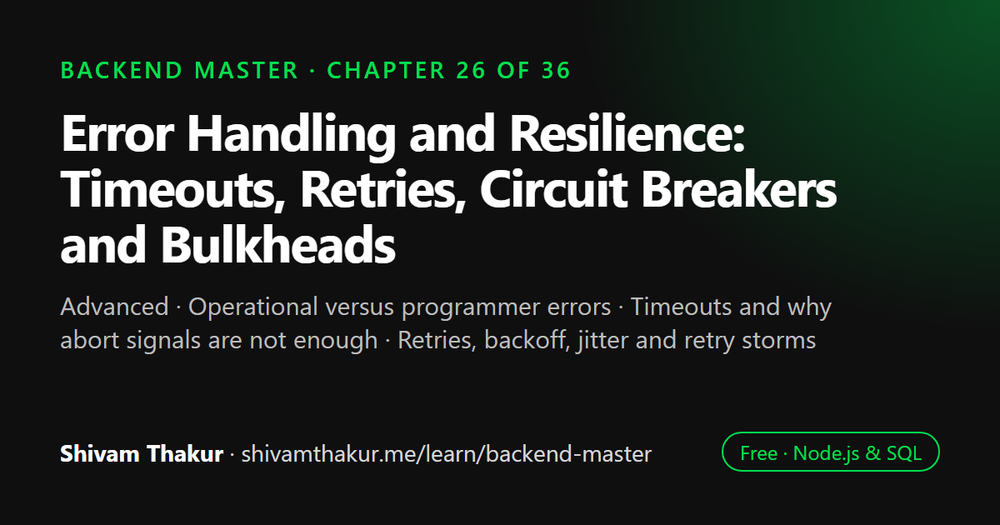

Chapter 26 of 36 · Advanced
Error Handling and Resilience: Timeouts, Retries, Circuit Breakers and Bulkheads
Error Handling and Resilience — Designing for Failure

Everything fails, so resilience is what the system does next. This chapter builds a small toolkit and tests it against simulated failing dependencies: timeouts, retries with backoff and jitter, the retry storm, a circuit breaker, a bulkhead that kept an unrelated endpoint fast, and why retries without idempotency keys caused extra charges.
In this chapter you will learn
- Operational versus programmer errors
- Timeouts and why abort signals are not enough
- Retries, backoff, jitter and retry storms
- Circuit breakers and bulkheads
- Idempotency, fallbacks and process-level error policy
26.0 Why This Chapter Matters
Everything fails. Disks fill. Networks drop packets. A payment gateway returns 503 for ninety seconds. A dependency doesn't fail at all: it just goes slow, which is worse. Your own code throws an exception nobody predicted.
Beginners write the happy path and treat failure as a rare exception. Production engineers know the truth Werner Vogels (Amazon's CTO) put in one sentence: "Everything fails, all the time." The difference between a resilient system and a fragile one is not whether failures happen; it's what the system does when they do:
- Does one slow dependency drag the whole site down with it?
- Does a retry loop turn a 10-second blip into a 30-minute outage?
- Does a timeout after a successful payment cause the customer to be charged twice?
- When the recommendation service dies, does the product page break, or just show a plainer page?
Chapter 25 let you see failures. This chapter teaches you to survive them. Every pattern below is implemented in a small dependency-free toolkit (resilience.mjs) and put through a simulated failing dependency, with measured numbers:
- Error taxonomy: operational errors vs programmer errors, and what to do with each.
- Timeouts: the one setting that prevents most cascading failures.
- Retries with exponential backoff and jitter, and the retry storm.
- Circuit breakers (fail fast, recover automatically).
- Bulkheads (isolate failures so a slow dependency can't starve everything else).
- Fallbacks and graceful degradation.
- Idempotency: why retries without it double-charge customers.
- Process-level errors:
unhandledRejection,uncaughtException, and why swallowing them is dangerous. - Chaos testing the whole stack.
26.1 Error Taxonomy: Operational vs Programmer Errors
The most useful distinction in Node error handling (popularised by the Node.js "Error Handling" guidelines):
| Operational errors | Programmer errors | |
|---|---|---|
| Meaning | Expected failures of the environment | Bugs in your code |
| Examples | DB connection refused, timeout, ECONNRESET, invalid user input, 404, out of stock, rate-limited, disk full |
TypeError: undefined is not a function, wrong argument type, off-by-one, forgotten await, assertion failure |
| Can the code recover? | Often yes: retry, fall back, report to the user | No: the program's state is now untrustworthy |
| Right response | Handle it: return the right status, retry, degrade | Crash (after logging), let the supervisor restart a clean process; fix the bug |
You made this distinction implicitly in earlier chapters: DomainError('OUT_OF_STOCK') is an operational error mapped to 409 (Ch 11, 16); a TypeError from a bug falls to the global handler and returns a generic 500 (Ch 25).
Make error handling uniform
export class OperationalError extends Error {
constructor(code, message, { retryable = false, cause } = {}) { super(message ?? code, { cause }); this.code = code; this.retryable = retryable; }
}- A stable
code(TIMEOUT,UPSTREAM_5XX,CIRCUIT_OPEN,OUT_OF_STOCK) that code and dashboards branch on (never parsemessage). - A
retryableflag so generic retry logic can decide without knowing the dependency. cause(new Error(msg, { cause })) to keep the original error and stack when wrapping.- A single mapping layer from error → HTTP status/body (Chapter 8's
application/problem+json), so handlers justthrow.
Express 5 and async errors
Express 5 forwards rejected promises from async handlers to the error middleware automatically (Express 4 required try/catch+next(err) or a wrapper). Your Chapter 25 error handler therefore sees both thrown and rejected errors. But errors raised in callbacks not tied to the request (a setTimeout, an event emitter, a floating promise you forgot to await) are not caught by Express, which brings us to process-level policy (§26.8).
Rules of thumb
- Throw early, catch late: detect problems where they occur; handle them where you know what to do (usually at the boundary: route handler, queue consumer).
- Don't catch what you can't handle. Empty
catch {}hides bugs. - Never swallow errors silently; log them once (Chapter 25) with context.
- Fail fast on invalid state (validate config at startup, Chapter 4/7).
- Wrap and add context (
new OperationalError('PAYMENT_FAILED', '…', { cause: err })), don't leak raw driver errors to clients (Chapter 23).
26.2 Timeouts: The Most Important Setting You Aren't Using
A call without a timeout can wait forever. If a dependency accepts your connection and then never answers, each request that touches it holds a connection, a file descriptor, memory and a pool slot, indefinitely. Requests pile up, the pool empties, and your healthy service stops serving anyone. One slow dependency becomes a total outage.
We tested it against a real HTTP server that accepts connections and never responds:
without a timeout : STILL WAITING after 3000 ms (it would wait forever)
with a 300 ms timeout : failed fast after 307 ms -> TIMEOUTA bug in my first timeout wrapper
My first withTimeout aborted an AbortController when the timer fired, which is the standard advice. In the chaos test below it did nothing: calls that should have timed out kept going. Why? Aborting a signal only stops code that is listening to the signal. fetch honours it; my simulated gateway function ignored it, so the wrapper kept waiting. (A debugging run showed timeouts: 0 where 66 were expected.) The fix: also race the promise against the deadline so the caller is always released, while still aborting the signal so cooperative code can stop its work:
export function withTimeout(fn, ms) {
const ctl = new AbortController(); let timer;
const deadline = new Promise((_, reject) => { timer = setTimeout(() => {
const e = new OperationalError('TIMEOUT', `timed out after ${ms} ms`, { retryable: true }); ctl.abort(e); reject(e); }, ms); });
return Promise.race([Promise.resolve().then(() => fn(ctl.signal)), deadline]).finally(() => clearTimeout(timer));
}But note what a timeout does not do: the underlying work may still be running (and, as we'll see in §26.6, a payment may still complete after you gave up). A timeout frees you; it doesn't undo them.
Where to set timeouts (everywhere)
| Layer | Setting |
|---|---|
| Outbound HTTP | fetch(url, { signal: AbortSignal.timeout(3000) }) or an Agent/undici timeouts |
| PostgreSQL | statement_timeout, lock_timeout, idle_in_transaction_session_timeout (Ch 12, 14, 16), pool connectionTimeoutMillis |
| Redis | command/connect timeouts in the client |
| Inbound HTTP server | server.requestTimeout, headersTimeout, keepAliveTimeout (Ch 3, 6) |
| Whole request | A deadline for the entire user request |
Deadline propagation
If a user request has a 2-second budget and spends 1.5 s on the first call, the second call should get 500 ms, not a fresh 3-second timeout. Pass an absolute deadline (or AbortSignal.any([...])) down the call chain, and have downstream services respect it (gRPC does this natively with deadlines, Chapter 10). Timeouts should also decrease as you go deeper so inner calls give up before outer ones (otherwise the user has already left while the server keeps working).
Choosing values
Set timeouts from measured latency (e.g., slightly above the dependency's p99.9), not guesses, and monitor the timeout rate. Too short → false failures (and retry storms); too long → resource exhaustion. A hung dependency is the dangerous case; connection errors fail fast on their own.
26.3 Retries: Powerful and Dangerous
Many failures are transient (a dropped packet, a brief overload, a failover). A retry turns them into successes. We simulated a dependency that fails 50% of calls and sent 2,000 requests:
no retry success 51.0% | dependency saw 2000 calls (1.00x load)
retry x3, jittered backoff success 93.3% | dependency saw 3838 calls (1.92x load)
retry x6, jittered backoff success 99.1% | dependency saw 4044 calls (2.02x load)
theory: 0.5 → 50%; 0.5⁴ fails = 6.25% → 93.8%; 0.5⁷ = 0.8% → 99.2%The measured success rates match the probability theory (each attempt independently fails 50%). Retrying nearly doubled the load on the dependency (≈1.9–2×), which is the hidden cost, and the key to the next experiment.
The retry implementation
export async function retry(fn, { retries = 3, baseMs = 50, maxMs = 2000, jitter = true, isRetryable = (e) => e.retryable } = {}) {
for (let attempt = 0; ; attempt++) {
try { return await fn(attempt); }
catch (e) {
if (attempt >= retries || !isRetryable(e)) throw e; // give up, or never retry non-retryable errors
const cap = Math.min(maxMs, baseMs * 2 ** attempt); // exponential backoff: 50, 100, 200, 400 ...
await sleep(jitter ? Math.random() * cap : cap); // "full jitter": a random wait in [0, cap]
}
}
}The rules of safe retrying
- Retry only transient, retryable errors (timeouts, connection resets,
502/503/504,429withRetry-After). Never retry400/401/403/404/409/422: the same request will fail the same way. - Retry only idempotent operations, or make them idempotent with a key (§26.6). Retrying
POST /chargeblindly double-charges. - Cap attempts and total time. 2–3 retries is usual; also respect the caller's deadline.
- Use exponential backoff with jitter (below).
- Retry in one layer only. If the browser retries, the API retries, the service retries and the SDK retries, 3 retries per layer = 3⁴ = 81 attempts per user action. Pick one place (usually the layer closest to the failing call).
- Prefer a retry budget (e.g., retries may add at most 10% extra traffic) so a struggling dependency isn't buried.
The retry storm
Retries are positive feedback: failures cause retries, which cause more load, which cause more failures. We modelled a dependency that can handle 100 concurrent calls and then received a burst of 300 clients:
no retries succeeded 100/300 | calls to dependency 300 | peak concurrency 101
retries, backoff, NO jitter succeeded 300/300 | calls to dependency 600
retries, backoff + full jitter succeeded 300/300 | calls to dependency ~625Here the retries rescued all 300 clients (the overload cleared as earlier calls finished), at the cost of doubling the number of calls. The instructive part is the shape of the retry traffic, measured per 100 ms window:
NO jitter calls per 100 ms window: 300 200 0 100 ← synchronized pulses
full jitter calls per 100 ms window: 464 111 44 14 4 ← retry pressure decays smoothlyWithout jitter, every client that failed at the same instant waits exactly the same backoff and retries in lockstep: pulses of 200 and 100 simultaneous calls (a thundering herd), each capable of re-overloading a recovering service. With full jitter, retries spread out and fade quickly. A fair caveat from the data: the first window was busier with jitter (464 vs 300) because a random wait in [0, cap] can be near zero, so some clients retry almost immediately. Jitter doesn't reduce the total work; it spreads it in time. (AWS's well-known analysis of backoff variants recommends full or decorrelated jitter for this reason.) Real systems combine jitter with the circuit breaker below, so a dependency that's truly down stops receiving retries at all.
26.4 Circuit Breakers: Fail Fast, Recover Automatically
If a dependency is down, retrying (even with backoff) just makes every caller wait for a timeout, wasting threads, connections and latency budget, and hammering a service that needs quiet to recover. A circuit breaker (named after the electrical device) stops calling a failing dependency for a while:
failures ≥ threshold after openMs
CLOSED ───────────────────────► OPEN ───────────────────────► HALF-OPEN
(calls flow; (fail immediately, (allow ONE probe call)
count failures) no call made) │success │failure
▲ ▼ ▼
└───────────────────────────────────────────────────────── CLOSED OPEN againOur implementation (≈25 lines in resilience.mjs) was tested against a dependency that hangs for 2 seconds and then recovers, with one request every 50 ms for 5 seconds, caller timeout 300 ms:
no breaker calls that reached the dependency: 100 | outcomes ok 65, TIMEOUT 35, CIRCUIT_OPEN 0 | caller p50 32 ms, p95 314 ms
WITH breaker calls that reached the dependency: 74 | outcomes ok 63, TIMEOUT 11, CIRCUIT_OPEN 26 | caller p50 31 ms, p95 310 ms
transitions: closed->open, open->half-open, half-open->open, open->half-open, half-open->closedWhat happened: after five failures the breaker opened; 26 requests were rejected instantly (CIRCUIT_OPEN) instead of each waiting 300 ms; periodically it went half-open and sent a probe (the first probe still hit the outage, so it re-opened); once the dependency recovered, a probe succeeded and the circuit closed. The dependency saw 26% fewer calls, and 24 fewer callers sat through a full timeout (35 → 11). (Honesty note: the p95 latency barely changed because the 11 remaining timeouts, being 11% of requests, still sit at the 95th percentile. The breaker's wins are load removed, threads/connections not held, and fast, explicit failure, not a magic p95.)
Using breakers well
- One breaker per dependency (or per endpoint), so a bad payments provider doesn't open the circuit to inventory.
- Open on error rate over a window (e.g., 50% of ≥ 20 calls) and/or consecutive failures; count timeouts as failures.
- When open, return a fallback (§26.5) or a fast, explicit error (
503+Retry-After), and emit a metric/log (Chapter 25: a state-change alert is valuable). - Don't count client errors (4xx) as failures.
- In production, use a tested library (
opossumin Node; Resilience4j/Polly elsewhere) or a mesh feature (Envoy outlier detection) (not run here).
26.5 Bulkheads and Graceful Degradation
Bulkheads: contain the damage
A ship's hull is divided into watertight compartments so one breach doesn't sink it. In software, give each dependency its own limited share of resources, so one slow dependency can't consume everything.
The experiment: a shared pool of 10 connections serves both a slow dependency (each call holds a connection for 1.5 s) and an unrelated fast endpoint (20 ms). 60 slow requests arrive, then 30 fast ones:
no bulkhead FAST endpoint latency p50 9085 ms p95 9120 ms | slow calls: 60 served, 0 rejected
WITH bulkhead (3 slots) FAST endpoint latency p50 159 ms p95 217 ms | slow calls: 3 served, 57 rejected fastWithout isolation, the 60 slow calls took every connection for six rounds of 1.5 s, and the unrelated fast endpoint's p50 became 9 seconds: a slow dependency took down a feature that didn't even use it. With a 3-slot bulkhead on the slow dependency, the fast endpoint stayed at 159 ms (still queueing behind its own 30 requests on 7 free connections). The price: the slow dependency got only 3 concurrent calls, and 57 callers were rejected immediately (BULKHEAD_FULL) instead of waiting. That is the trade: fail some work fast to protect all other work. It's load shedding applied per dependency.
export class Bulkhead {
constructor({ maxConcurrent = 5, maxQueue = 10 } = {}) { /* ... */ }
async exec(fn) {
if (this.active >= this.maxConcurrent) {
if (this.queue.length >= this.maxQueue) throw new OperationalError('BULKHEAD_FULL', 'too many concurrent calls');
await new Promise((res) => this.queue.push(res));
}
this.active++; try { return await fn(); } finally { this.active--; this.queue.shift()?.(); }
}
}(A bug I fixed while testing: my first connection-pool simulation woke a waiter and then incremented the free count, so two callers could grab one slot. Handing the slot directly to the next waiter fixed it. Concurrency primitives are easy to get subtly wrong; use well-tested ones (p-limit, p-queue, generic-pool) in real code.)
Other bulkhead forms: separate pools per dependency (a dedicated DB pool for reports so a heavy report can't starve checkout), separate worker pools/queues, separate processes or services, and per-tenant limits (Chapter 22).
Graceful degradation: a worse answer beats no answer
When a non-essential dependency fails, serve a reduced experience:
const recommend = () => withFallback(
() => callRecommendationService(),
(e) => ({ degraded: true, reason: e.code, items: cachedPopularProducts })); // popular items instead of personalisedrecommendation service down -> {"degraded":true,"reason":"UPSTREAM_5XX","items":["Gel Pen","Notebook A5","Backpack"]}
recommendation service up -> ["personalised list"]Classify features by criticality:
| Feature | If its dependency fails… |
|---|---|
| Checkout, payment, stock decrement | Core: fail clearly, retry carefully, never fake success |
| Product search | Fall back to a simpler DB search (Chapter 20) |
| Recommendations, reviews summary, "recently viewed" | Degrade: cached/popular/empty |
| Analytics, audit enrichment | Queue it and move on (Chapter 28) |
| Inventory check during an outage | Accept the order as pending confirmation (our chaos test, §26.7) |
Design the degraded states explicitly (and mark them in the response/UI), and make sure fallbacks can't themselves fail (a fallback that calls the same broken service isn't one). Other techniques: stale-while-revalidate caching (serve slightly old data, Chapter 27), feature flags to switch features off during incidents, and load shedding (reject low-priority work first when saturated, returning 503 with Retry-After rather than slowing everyone down).
26.6 Idempotency: Why Retries Can Charge Twice
Timeouts create the nastiest ambiguity in distributed systems: you don't know whether the other side did the work. A payment request times out. Did the card get charged? If you retry blindly and it had, you've charged twice.
Our simulated payment gateway behaves like real ones: 15% of calls fail with 503 before charging; another 15% charge the card and then respond too slowly, so the caller times out even though the money moved. We ran a checkout across an inventory outage, 300 orders:
naive (no timeouts, no retries) completed 144/300 | failed 156 | latency p99 1083 ms | CHARGES 144 for 144 completed orders
retries, NO idempotency key completed 192/300 | failed 108 | latency p99 828 ms | CHARGES 232 for 192 completed orders <- 40 extra charge(s)
resilient (timeouts+retries+key+breaker) completed 300/300 (132 degraded) | failed 0 | latency p99 569 ms | CHARGES 300 for 300 completed ordersThe middle row is the lesson: adding timeouts and retries without an idempotency key improved completion (144 → 192) but caused 40 extra charges. Customers were billed for orders that "failed" or billed twice for ones that succeeded. A resilience feature became a financial bug.
The fix, from Chapters 8 and 16: send a unique Idempotency-Key per logical operation (order-<id>); the server stores the first result under that key and replays it for repeats. In the third row every retry reused the key, so the gateway returned the original charge: exactly one charge per order, zero extras.
await retry(() => withTimeout(() => gateway.charge({ orderId: id, idemKey: `order-${id}` }), 300), { retries: 4, baseMs: 30 });Rules: make every non-idempotent write idempotent before adding retries; generate the key once before the first attempt (not per attempt); store keys with a TTL; and for money, add a reconciliation job that compares your records with the provider's (because even with keys, you must handle "I never learned the outcome" cases). Payment providers (Stripe, Razorpay) support idempotency keys natively; use them.
26.7 Putting It Together, and Chaos Testing
The "resilient" checkout in the table above composes the patterns:
const cb = new CircuitBreaker({ failureThreshold: 5, windowMs: 2000, openMs: 400, name: 'inventory' });
return async (id) => {
let degraded = false;
try { await cb.exec(() => retry(() => withTimeout(() => inventory(), 300), { retries: 2, baseMs: 30 })); } // breaker( retry( timeout( call ) ) )
catch { degraded = true; } // inventory unavailable: accept as "pending stock confirmation"
await retry(() => withTimeout(() => gateway.charge({ orderId: id, idemKey: `order-${id}` }), 300), { retries: 4, baseMs: 30 });
return { degraded };
};The layering order matters: timeout innermost (bound each attempt), retry around it (handle transient failures), breaker around the retries (stop calling when it's clearly down), bulkhead on the outside (cap concurrency). Under the same chaos (30% gateway faults + a 1.2-second inventory outage) the three versions produced:
| Version | Completed | Failed | p99 latency | Charge integrity |
|---|---|---|---|---|
| Naive | 144 / 300 | 156 | 1083 ms | OK (but half the customers lost) |
| Timeouts + retries, no key | 192 / 300 | 108 | 828 ms | 40 extra charges |
| Resilient | 300 / 300 (132 degraded) | 0 | 569 ms | 300 charges for 300 orders |
The resilient version completed everything, 132 of them in degraded mode (accepted as "pending stock confirmation" during the inventory outage: a business decision you must make explicitly, with a follow-up process to cancel/backorder if stock can't be confirmed), and was faster at the tail because timeouts cut off the 1-second hangs.
Chaos engineering
You only know your system is resilient if you've seen it survive failure. Chaos engineering injects failures deliberately and in a controlled way: kill an instance, add 500 ms latency to a dependency, make a dependency return errors, fill a disk, partition the network. Start in staging with a hypothesis ("if inventory is down, checkout still completes in degraded mode and no customer is double-charged"), a blast radius limit, and abort conditions; graduate to production game days. Tools: Toxiproxy (a TCP proxy that adds latency/timeouts between your app and a database), Chaos Mesh/Litmus (Kubernetes), Gremlin, AWS Fault Injection Simulator (none run here; my chaos was in-process simulation). Each experiment should end with an action item (a missing timeout, alert, or fallback).
26.8 Process-Level Errors: unhandledRejection and uncaughtException
What does Node do when an error escapes all your try/catch? We ran four tiny child processes and captured the exit codes (Node 22):
unhandled promise rejection -> exit code 1 | stdout: "" | stderr: Error: forgot to await
uncaught exception in a callback -> exit code 1 | stdout: "" | stderr: Error: thrown in a timer
handler that logs then exits -> exit code 1 | stdout: "logged: boom" (supervisor restarts a clean process)
handler that SWALLOWS the error -> exit code 0 | stdout: "swallowed: credit step failed | process kept running with balance = 50"- Unhandled rejections and uncaught exceptions now crash the process (since Node 15 the default for rejections is
throw). In the first two, the "still running" line never printed: the process died first. - The third is the recommended pattern: log (flush!), then exit, and let the supervisor (Kubernetes, systemd, PM2, Docker restart policy) start a fresh process.
- The fourth is the anti-pattern. The handler swallowed the error, the process lived on, and its state was corrupt: a money transfer debited
balance(100 → 50) and then failed before crediting, and nobody noticed. After a programmer error you cannot know what is half-done. A crash is safer than corruption.
process.on('uncaughtException', (err) => { logger.fatal({ err }, 'uncaught exception'); logger.flush(); process.exit(1); });
process.on('unhandledRejection', (reason) => { throw reason; }); // turn it into an uncaught exception → same pathBecause crashes will happen, design for them: graceful shutdown for the planned case (Chapter 25), plus idempotent, resumable work so a crash mid-task leaves nothing half-done (transactions, Chapter 16; queue visibility timeouts, Chapter 28). Run multiple instances so one crash isn't an outage, and put a restart backoff (CrashLoopBackOff) in place so a bug that crashes at startup doesn't spin forever. Worker threads and cluster (Chapter 5) isolate crashes per worker.
Other classic traps
- Floating promises: calling an async function without
awaitor.catch(). Lint with@typescript-eslint/no-floating-promisesoreslint-plugin-promise. Promise.allrejects on the first failure while other promises keep running (usePromise.allSettledwhen you need every result).- Errors thrown inside event emitters (
'error'events with no listener crash the process, as we saw with the idle-in-transaction timeout in Chapter 16). try/catcharound a non-awaited promise catches nothing.- Catching an error just to rethrow a different one and losing the original (use
cause).
26.9 A Resilience Checklist for Every Dependency Call
For each outbound call (HTTP service, DB, cache, queue, provider), ask:
- Timeout set (connect + total), shorter than the caller's deadline?
- Is it idempotent? If not, is there an idempotency key?
- Retry policy: only transient errors, bounded, exponential backoff with jitter, in one layer only?
- Circuit breaker so a dead dependency is isolated and recovers?
- Bulkhead/concurrency limit so it can't consume all resources?
- Fallback/degraded mode defined, or a clear failure if it's core?
- Metrics and logs: latency, errors, timeouts, breaker state, retries (Chapter 25)?
- Tested with injected failures (slow, error, hang, partial)?
- Failure of this call: what does the user see? Is it honest and recoverable?
26.10 Edge Cases and Gotchas Checklist
- No timeouts on HTTP/DB/Redis calls; timeouts relying on
AbortSignalthat the callee ignores. - Timeout longer than the user's patience / caller's own deadline; no deadline propagation.
- Retrying non-idempotent operations; no idempotency keys; key regenerated per attempt.
- Retrying non-retryable errors (4xx); infinite retries; retries at every layer (multiplicative).
- Backoff without jitter (synchronised retry pulses); no retry budget.
- One shared pool/queue for everything (no bulkheads); unbounded queues.
- Circuit breaker counting 4xx as failures; one breaker for many dependencies; no alert on state changes.
- Fallbacks that depend on the failing service; fallback results not marked as degraded.
- Swallowing
uncaughtException/unhandledRejectionand continuing; not flushing logs before exit. - Floating promises;
Promise.allwhere partial results matter; emptycatch {}blocks. - Leaking raw errors/stack traces to clients; losing
causewhen wrapping. - Resilience features never tested with injected failures; no chaos drills; no reconciliation for money.
- A single instance (no redundancy); no restart/backoff policy; no graceful degradation plan for core flows.
26.11 Chapter Summary
- Everything fails; resilience is what the system does next. Distinguish operational errors (handle: retry, fall back, report) from programmer errors (log and crash, restart clean). Use a uniform
OperationalErrorwithcode,retryable,cause. - Timeouts everywhere: a hung dependency made a call wait forever; a 300 ms timeout failed fast in 307 ms. Aborting a signal doesn't stop code that ignores it: my first wrapper silently failed (0 of 66 timeouts) until I raced the deadline. A timeout frees the caller, not the work.
- Retries (transient + idempotent + bounded + backoff + jitter + one layer): 50%-flaky → 93.3% at 3 retries, 99.1% at 6, matching theory, at ~2× load. Without jitter retries arrive in synchronised pulses (300, 200, 0, 100); with jitter pressure decays smoothly (464, 111, 44, 14, 4), though not smaller in total.
- Circuit breakers (closed → open → half-open): during a 2 s hang, calls reaching the dependency fell 100 → 74, timeouts 35 → 11, with 26 instant rejections and a clean recovery; p95 barely moved: the win is load and resource relief.
- Bulkheads: an unrelated fast endpoint went from p50 9,085 ms to 159 ms once the slow dependency was capped at 3 concurrent calls (57 rejected fast). Graceful degradation: cached/popular items instead of failure.
- Idempotency: retries + timeouts without a key caused 40 extra charges; with a key, 300 charges for 300 orders. Compose: bulkhead(breaker(retry(timeout(call)))).
- Process errors: Node 22 crashes on unhandled rejections/exceptions; log, flush, exit; swallowing them left a corrupted balance. Chaos-test, reconcile money, and run multiple instances.
26.12 Revision Notes
- Operational → handle; programmer → crash.
OperationalError { code, retryable, cause }. - Timeouts on every call; race the deadline (AbortSignal only helps cooperative code); propagate deadlines; inner < outer.
- Retry: transient + idempotent only; exponential backoff
base·2ⁿ, full jitterrand(0, cap); 2–3 tries; one layer; retry budget. - Breaker: closed/open/half-open; per dependency; fail fast; alert on transitions.
- Bulkhead: cap concurrency per dependency; reject fast beyond queue.
- Fallback: degrade non-core, fail clearly for core; mark degraded.
- Idempotency key per logical op, generated once; reconcile money.
- Crash on
uncaughtException/unhandledRejectionafter logging + flushing; never swallow. - Layer order: bulkhead → breaker → retry → timeout → call. Test with injected faults.
26.13 Mind Map (ASCII)
RESILIENCE
│
┌───────────┬───────────┬───┴───────┬────────────┬──────────────┬───────────┐
ERRORS TIMEOUTS RETRIES BREAKERS ISOLATION IDEMPOTENCY PROCESS
│ │ │ │ │ │ │
operational every call transient closed bulkhead key per op crash >
vs bug deadlines backoff open pools replay swallow
code/cause AbortSignal jitter half-open load shedding reconcile flush+exit
retryable + race budget per dep degrade (money) supervisor
one layer alert fallback chaos tests26.14 Cheat Sheet
await bulkhead.exec(() => breaker.exec(() => retry(() => withTimeout((signal) => callDep({ signal }), 300),
{ retries: 2, baseMs: 50, maxMs: 1000 }))); // outer → inner
const delay = Math.random() * Math.min(maxMs, baseMs * 2 ** attempt); // full jitter
fetch(url, { signal: AbortSignal.timeout(3000) }); // built-in timeout (cooperative)
headers['Idempotency-Key'] = `order-${orderId}`; // generate ONCE, reuse on retries
process.on('uncaughtException', (e) => { logger.fatal({ e }); logger.flush(); process.exit(1); });26.15 Key Takeaways
- Timeouts first: a dependency that hangs is more dangerous than one that errors.
- Retries need idempotency, bounds, backoff and jitter, or they become the outage.
- Fail fast and isolate: breakers stop hammering the dead; bulkheads protect the healthy.
- Degrade gracefully on non-core features; fail clearly on core ones.
- Never swallow a programmer error: log, flush, crash, restart clean.
- Prove it with failure injection; resilience you haven't tested is a hope.
26.16 20 Multiple Choice Questions
Tap an answer to check it. Your score updates as you go.
Score: 0 / 0 answered (20 questions)
Which is an operational error?
Right response to a programmer error:
Why is a call with no timeout dangerous?
Why did my first
withTimeoutfail to time out?A timeout on a payment call means:
Which errors should normally NOT be retried?
With a 50% failure rate and 3 retries, expected success is about:
Retry cost: the dependency saw roughly what load multiplier in our test?
Exponential backoff without jitter causes:
"Full jitter" waits:
Retrying at the browser, API, service and SDK layers (3 retries each) can yield:
A circuit breaker in the open state:
The half-open state is for:
In our breaker test the p95 latency barely changed because:
The bulkhead experiment reduced the fast endpoint's p50 from about:
A bulkhead protects by:
Timeouts+retries without idempotency in the chaos test produced:
Idempotency keys should be generated:
In Node 22, an unhandled promise rejection:
Why is swallowing
uncaughtExceptiondangerous?
Show the answer key
1-b, 2-b, 3-b, 4-b, 5-b, 6-c, 7-b, 8-b, 9-b, 10-b, 11-c, 12-b, 13-b, 14-b, 15-a, 16-b, 17-b, 18-b, 19-b, 20-b
26.17 20 Hands-on Exercises
(Use resources/ch26/.)
Easy
- Run
lab1.mjs; confirm the retry success rates match 1 − pⁿ. - Remove the
Promise.racefromwithTimeoutand observe the chaos test break. - Add
AbortSignal.timeout(2000)to a realfetchand test against a server that hangs. - Make
isRetryablereturn false for 4xx and test with a 404 and a 503. - Trigger and read each process-level failure mode in
lab3.mjs.
Medium
- Add a retry budget (max 10% extra requests) to
retryand test under a 50% failing dependency. - Implement decorrelated jitter and compare the per-window timeline with full jitter.
- Extend the breaker to open on error rate over a rolling window (≥20 calls, ≥50% failures).
- Add metrics (state gauge, rejected counter) to the breaker and graph transitions (Ch 25).
- Build a deadline-propagation helper (
withDeadline(ms),remaining()), and use it across three chained calls. - Replace my
Bulkheadwithp-limit/p-queueand compare behaviour under the same experiment. - Add a stale-cache fallback with TTL and mark degraded responses with a header.
Hard
- Place Toxiproxy between your app and PostgreSQL; add latency and timeouts; verify your pool/timeouts/readiness (Ch 25) behave.
- Implement the full checkout with a real idempotency-key store in PostgreSQL (unique key + stored response) and a reconciliation job.
- Write a chaos script that randomly breaks each dependency for 10 s while a load test runs; assert SLOs hold.
- Implement load shedding: reject lowest-priority requests when event-loop lag exceeds a threshold.
- Build "hedged requests" (send a second request after p95 delay to another replica) and measure tail-latency improvement vs extra load.
- Show a retry storm taking down a capacity-limited dependency, then fix it with breaker + jitter + budget; plot requests/second.
- Simulate a crash in the middle of a multi-step order process and make it resumable (outbox/queue + idempotent steps).
- Run a game day: pick three failure scenarios for ShopLine, predict outcomes, execute, and write the resulting action items.
26.18 5 Interview Questions
1. What's the difference between operational and programmer errors, and how do you handle each?
Model answer: Operational errors come from the environment (timeouts, refused connections, bad input, out of stock) and are handled: retry if transient, fall back, or return the right status. Programmer errors are bugs (TypeError, wrong argument); the process state can't be trusted, so log, flush and crash so a supervisor restarts a clean process, then fix the bug. Never swallow uncaughtException.
2. Design a safe retry strategy. Model answer: Retry only transient errors on idempotent operations (or with idempotency keys), bounded to 2–3 attempts within the caller's deadline, with exponential backoff and jitter, in a single layer, ideally under a retry budget, and combined with a circuit breaker so a dead dependency isn't hammered. Verify with tests: our simulation showed 50% failures → 93% success at 3 retries at ~2× load, and synchronized pulses without jitter.
3. What is a circuit breaker and when does it help? Model answer: A state machine (closed/open/half-open) around a dependency that stops calling it after repeated failures, failing fast and probing periodically for recovery. It protects the dependency from extra load and the caller from waiting on timeouts, and frees threads/connections. It needs per-dependency scope, sensible thresholds, fallbacks and alerts on state changes.
4. What is a bulkhead? Give an example. Model answer: Resource isolation so one failing component can't exhaust shared resources: separate pools/concurrency limits per dependency. Example: capping calls to a slow third-party at 3 concurrent kept an unrelated endpoint at 159 ms instead of 9 s in our shared-pool test, at the cost of rejecting excess calls quickly.
5. A payment request times out. What do you do? Model answer: The outcome is unknown. Use an idempotency key generated once per order so retrying returns the original result instead of charging again, check the provider's status API or webhook before declaring failure, record a pending state, and reconcile periodically. In my simulation, retries without keys produced 40 extra charges; with keys, exactly one per order.
26.19 3 Real Projects
Project 1: Resilience Library (intermediate, ~10 hours). Package the toolkit with tests: timeout (cooperative and racing), retry (backoff, jitter, budget, retryable predicates), circuit breaker (rate-based, rolling window, events), bulkhead, and fallback. Property-test the retry maths and the breaker state machine; publish a README showing before/after experiments like this chapter's.
Project 2: Failure-Injection Harness (intermediate–advanced, ~12 hours). Build a Toxiproxy-based harness for ShopLine that injects latency, errors, resets and partitions between the app, PostgreSQL and Redis while running a load test, with automated assertions on SLOs, breaker states, readiness, and absence of duplicate side effects.
Project 3: Payments Reliability (advanced, ~14 hours).
Implement an idempotent payment flow (keys, stored responses, states pending/succeeded/failed/unknown), a reconciliation worker against a mock provider with deliberate timeout-after-success behaviour, and a chaos suite proving no double charges and no lost orders under crashes, timeouts, and duplicate webhooks.
26.20 Further Reading
- Michael Nygard, Release It! (Stability Patterns: Timeouts, Circuit Breaker, Bulkheads, Fail Fast, Steady State).
- AWS Architecture Blog: Exponential Backoff and Jitter (Marc Brooker) and the Amazon Builders' Library: Timeouts, retries and backoff with jitter; Using load shedding to avoid overload.
- Google SRE Book: Handling Overload, Addressing Cascading Failures.
- Node.js docs: Process events (
uncaughtException,unhandledRejection), AbortController /AbortSignal.timeout; Joyent's Error Handling in Node.js (operational vs programmer errors). - Principles of Chaos Engineering (principlesofchaos.org); Netflix tech blog on Chaos Monkey; Toxiproxy docs.
- Libraries:
opossum,cockatiel,p-retry,p-limit,p-queue,generic-pool; Resilience4j and Polly docs for the concepts. - Stripe docs: Idempotent requests.
Up next → Chapter 27: Caching (Part 5: Performance and Scale)
Part 4 (security, testing, reliability) is complete. Part 5 asks: how do you make ShopLine fast and make it big? It starts with caching at every level: HTTP caching (Cache-Control, ETag, CDNs), application caches, cache invalidation strategies, stampede protection revisited, and the consistency trade-offs, measured against the Redis and PostgreSQL setup you've already built.
Error Handling: frequently asked questions
What should a Node.js process do on an uncaught exception?
Log it with context, flush logs and exit so a supervisor starts a clean process. Swallowing the error can leave corrupt state, as our half-completed money transfer showed.
Why add jitter to retries?
Without jitter every client retries at the same moments, creating synchronized waves that can re-overload a recovering service. Jitter spreads retries over time.
What does a circuit breaker do?
After repeated failures it stops calling the dependency for a while and fails fast, then probes occasionally to detect recovery, saving resources and letting the dependency recover.
Why are retries dangerous for payments?
A timeout does not tell you whether the charge happened. Retrying without an idempotency key produced 40 extra charges in our simulation; with a key there was exactly one per order.